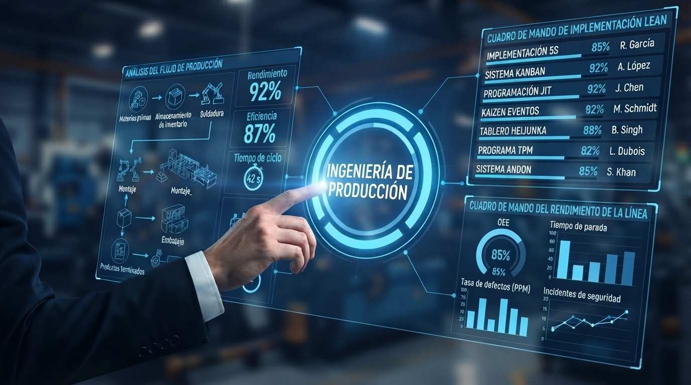

Antes de comprar otra máquina, evaluá cuánta capacidad se pierde hoy en tu planta. Detectamos las esperas, retrabajos, stock y traslados que no agregan valor y trabajamos para reducirlos con Lean Manufacturing.
Conocer más
Es un modelo de gestión enfocado en reducir las pérdidas y aumentar el valor para el cliente final, usando los recursos necesarios para la operación.
Ayuda a disminuir desperdicios, detectar y resolver cuellos de botella en la planta, mejorar la rentabilidad y reducir los plazos de entrega y sobrecostos operativos. Además, impulsa una cultura de mejora continua dentro de la empresa.
Inspección sistemática de la planta para clasificar y cuantificar las 8 fuentes de ineficiencia: sobreproducción, tiempos de espera, transporte innecesario, sobreprocesamiento, exceso de inventario, movimientos innecesarios, defectos y talento no aprovechado.
Evaluamos de manera práctica en el piso de planta las tres fuentes principales de pérdidas industriales: Muda (desperdicios), Mura (inconsistencia) y Muri (sobrecarga en operarios o maquinaria clave).
Comenzamos con un VSM simplificado para identificar estancamientos y calcular el Lead Time operativo. Luego armamos un mapeo del flujo de valor completo, de punta a punta.
Comenzamos consolidando las 3S básicas (Clasificar, Ordenar, Limpiar). Una vez estabilizado el orden físico, avanzamos hacia la estandarización y la disciplina de las 5S.
Implementamos producción por "tirón" (Pull System) mediante tarjetas señalizadoras, regulando la fabricación y el reabastecimiento según lo que el proceso requiera, para limitar la sobreproducción.
Desarrollamos talleres intensivos orientados a resolver de forma ágil cuellos de botella específicos en planta, sin necesidad, en general, de grandes inversiones, e impulsando la cultura de mejora continua.
Implementamos rutas logísticas (Mizusumashi / Water Spider) para reabastecer materias primas y retirar productos terminados, para que los operarios no tengan que abandonar su estación de trabajo.
Trabajamos para reducir los tiempos de preparación de las máquinas y liberar capacidad productiva.
Diseñamos e implementamos dispositivos mecánicos, sensores o guías que ayudan a prevenir el error humano y a detectar los defectos en el origen del proceso.
Basados en nuestra experiencia industrial, diseñamos planes flexibles y progresivos que se adaptan a la medida de tu empresa. Conocé los planes START y PYME para mejorar tu producción paso a paso.